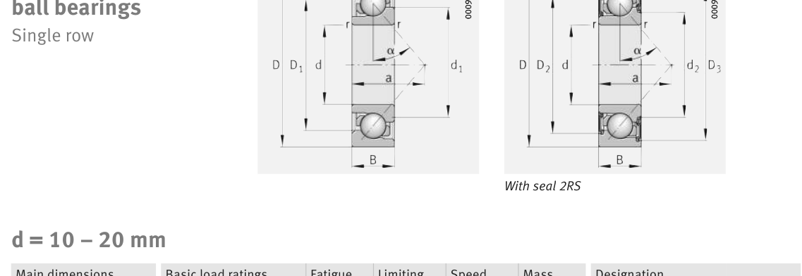

Original catalogue drawing - FAG Schaeffler HR 1, page 304

Scanned from the manufacturer catalogue page listing this part number. All part numbers printed on that table share the same drawing.
Scale cross-section
Blue = inner / outer ring, yellow = rolling element. Drawn to scale from this part's own
dimensions for selection reference only - not a manufacturing or assembly drawing.
Dimension table (mm / inch)
Symbol
Dimension
mm
inch
d
Bore diameter
20
0.7874
D
Outside diameter
52
2.0472
B
Inner-ring / bearing width
15
0.5906
r
Chamfer (min)
1.1
0.0433
Notes
Weights are given in kg. Load ratings are shown in both the original catalogue units and the converted value (1 N = 0.2248 lbf). Data is provided for selection reference only - confirm against the latest official catalogue before ordering.
Main dimensions
Bore d (mm)
20
Outside dia. D (mm)
52
Width B (mm)
15
Inner-ring shoulder dia. D1 (mm)
39.7
Seal outside dia. D2 (mm)
41.4
Dimension D3 (mm)
47.1
Load ratings & speeds
Basic dynamic load rating Cr (lbs)
4586
Basic static load rating Cor (lbs)
2495
Basic dynamic load rating Cr (N)
20400
Basic static load rating C0r (N)
11100
Fatigue limit load Cur (N)
750
Limiting speed nG (rpm)
8,600
Effective load centre a (mm)
23
Weight
Weight (kg)
0.147
Mounting dimensions (fillets / shoulders)
Housing fillet r max (mm)
1.1
Chamfer r1 min (mm)
0.6
Shaft shoulder da (mm)
27
Housing shoulder Da (mm)
45
Housing shoulder Db (mm)
47.8
Housing fillet ra max (mm)
1
Housing fillet ra1 max (mm)
0.6
Bearing life (ISO 281 basic rating life)
C / P
Equivalent load P (N)
L10 (106 rev)
L10h at 2,800 rpm
4
5,100
64
381
6
3,400
216
1,286
8
2,550
512
3,048
10
2,040
1,000
5,952
15
1,360
3,375
20,089
Basic rating life per ISO 281: L10 = (C/P)3 with C = 20,400 N. Hours = L10 x 106 / (60n). Life-modification factors for lubrication, contamination and temperature (aISO) are not included.
Source & traceability
Brand
FAG
Source catalogue
FAG / Schaeffler Rolling Bearings HR 1
Catalogue page
p.304 (dimensions)
Load ratings in newtons, fatigue limit load Cur, limiting speed nG and reference speed nB.
Send us the quantity you need and we will come back with price and
lead time, normally within 24 hours. Equivalent parts from other brands can be quoted at the same time.